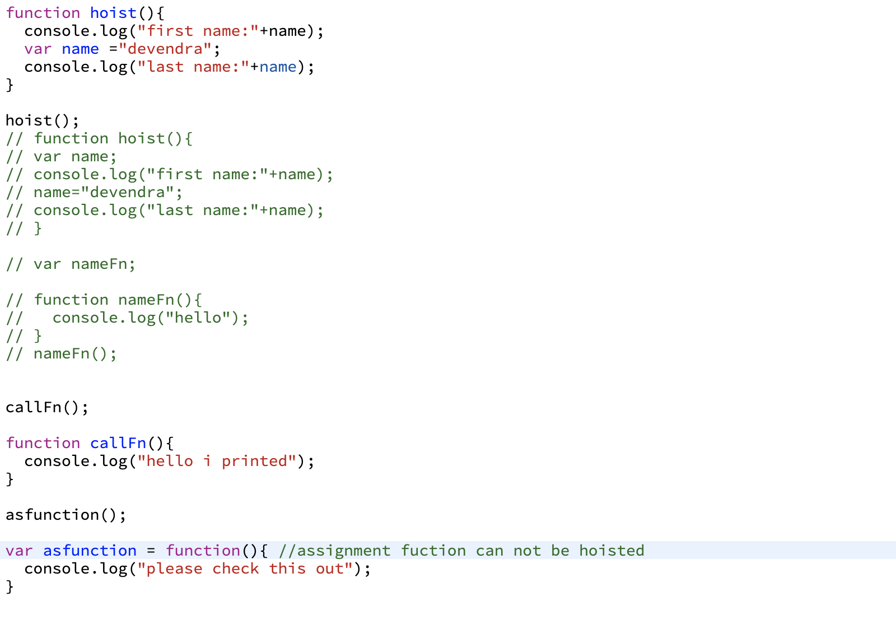

scope determines the visibility of variables and other resources in areas of your code.
Module Pattern and Self Invked Function example
Call, Apply and bind example
JavaScript has 5 data types that are copied by value: Boolean, null, undefined, String, and Number. We’ll call these primitive types. JavaScript has 3 data types that are copied by having their reference copied: Array, Function, and Object. These are all technically Objects, so we’ll refer to them collectively as Objects.
All variable declarations are hoisted (lifted and declared) to the top of the function, if defined in a function, or the top of the global context, if outside a function.
